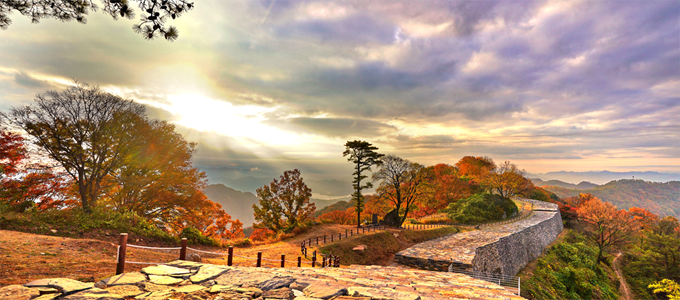
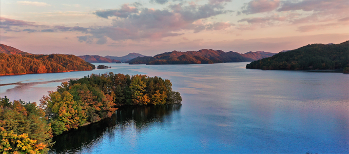
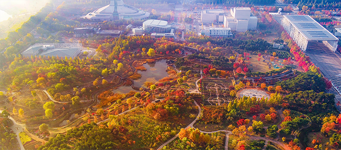
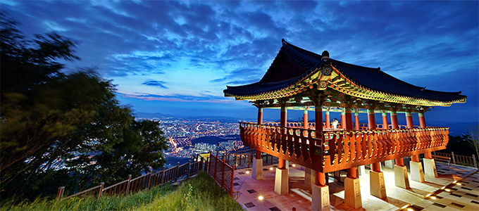
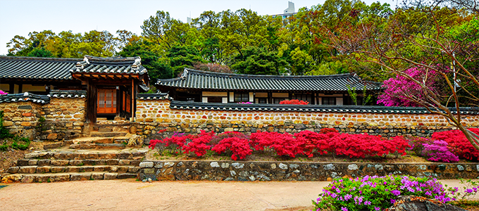
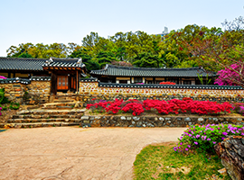
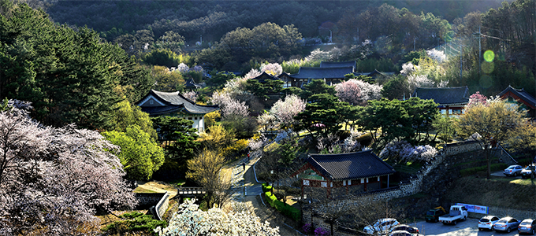
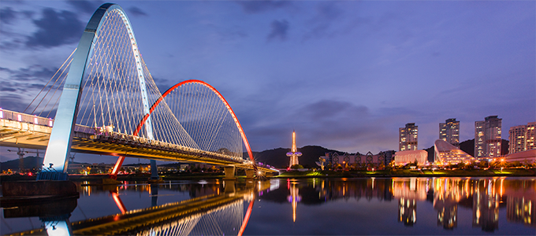

정주여건(자연·문화·관광)
- Home
- 대전소개
- 정주여건(자연·문화·관광)
자연
-

 계족산 황톳길
계족산 황톳길- 대전 대덕구
- 국내 최대 규모의 황톳길 맨발 산책로(14.5㎢)
-

 장태산 자연휴양림
장태산 자연휴양림- 대전 서구
- 대통령이 쉬어간 국내유일의 메타세콰이어 숲
-

 대청호
대청호- 대전 대덕구
- 우리나라에서 세번째로 큰 인공호수
-

 한밭 수목원
한밭 수목원- 대전 서구
- 중부권 최대규모의 도심 속 인공 수목원
-
식장산
- 대전 동구
- 대전 내 가장 큰 산으로 전망대의 야경이 환상적
-

 계룡산(수통골)
계룡산(수통골)- 대전 유성구
- 산세가 깊고 아름다운 계곡유원지
문화 · 관광
-

 대전 예술의전당
대전 예술의전당- 대전 서구
- 모든 장르의 공연을 소화할 수 있는 다목적 공연장
-

 대전 근현대사전시관
대전 근현대사전시관- 대전 중구
- 일제강점기, 한국전쟁, 2012년까지 행정중심지였던 옛 충남도청사
-

 대전 오월드
대전 오월드- 대전 중구
- 중부 이남의 최대 규모 종합테마공원
-
 동춘당
- 대전 대덕구
- 대한민국 보물 제209호
- 단아한 동춘당의 모습으로 주변 공원과 잘 어우러진다
-

 우암사적공원
우암사적공원- 대전 동구
- 푸른 나무들 사이로 기와를 얹은 옛 건물들이 있는 도심 속 시민들의 쉼터
-

 엑스포과학공원
엑스포과학공원- 대전 유성구
- 1993년 대전세계박람회 테마공원
- 인근에 국립중앙과학관, 천문대 등이 위치해 있는 국민 과학 교육의 장